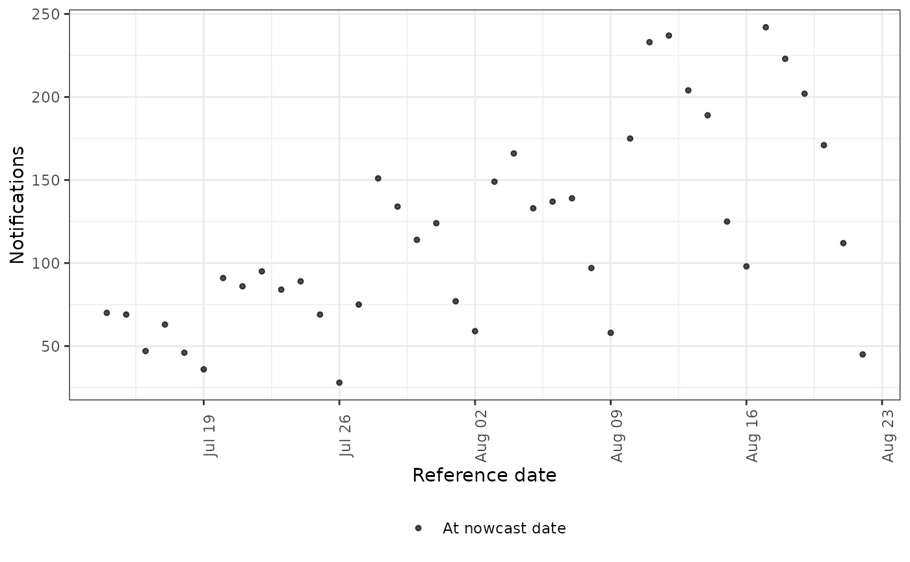
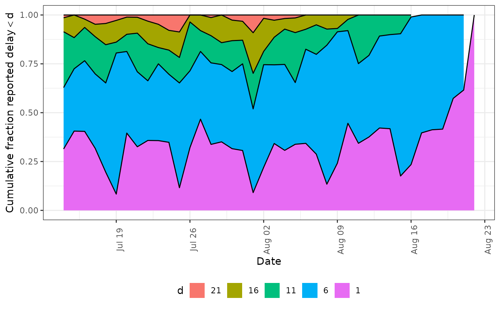
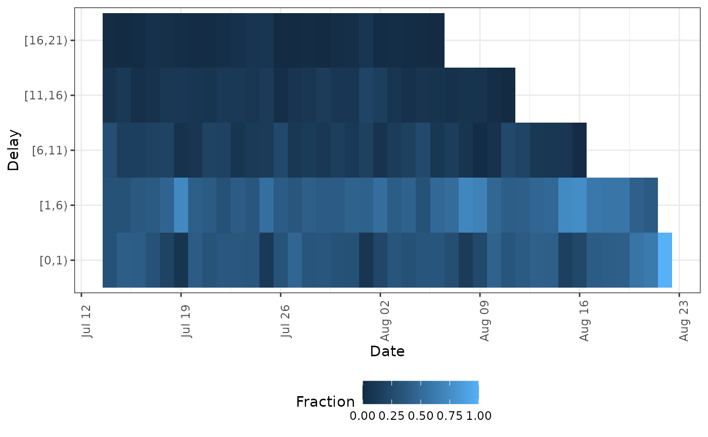
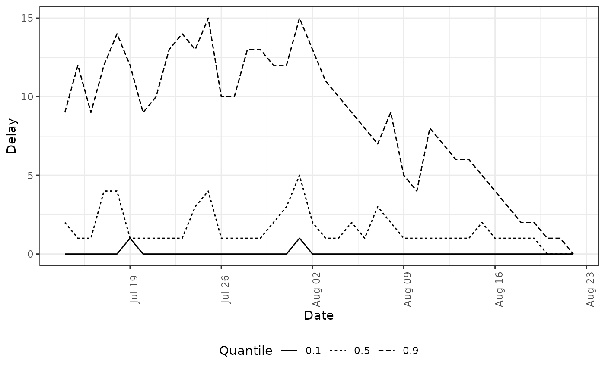
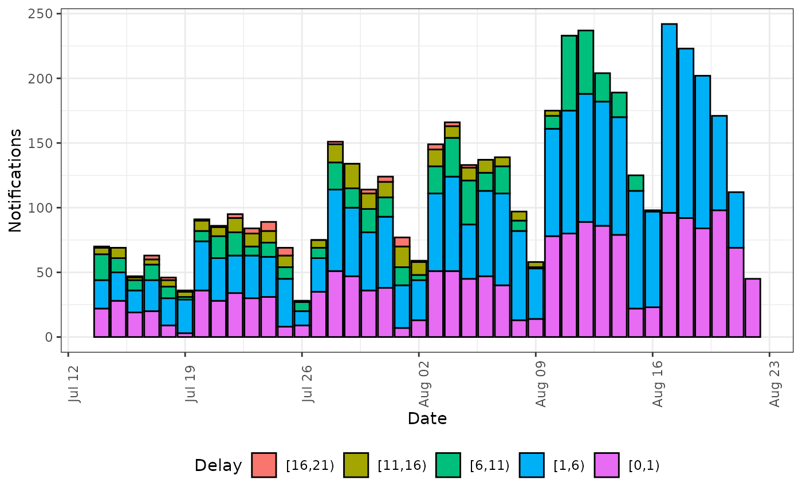

plot method for preprocessed data of class
"enw_preprocess_data". Creates descriptive plots of the
empirical reporting delay distribution and notification
time series.
Arguments
- x
A preprocessed data object as produced by
enw_preprocess_data().- type
Character string indicating the plot type; enforced by
base::match.arg(). Options:"obs"– latest observations (viaenw_plot_obs())"delay_cumulative"– cumulative empirical delay (viaenw_plot_delay_cumulative())"delay_fraction"– delay heatmap (viaenw_plot_delay_fraction())"delay_quantiles"– delay quantiles (viaenw_plot_delay_quantiles())"delay_counts"– notifications by delay group (viaenw_plot_delay_counts())
- delay_group_thresh
A numeric vector of left-closed interval thresholds for delay grouping (use
right = FALSEsemantics, so the upper bound should exceedmax_delay). Used by"delay_cumulative","delay_fraction", and"delay_counts". Defaults toNULL, which auto-generates thresholds frommax_delay.- quantiles
A numeric vector of probabilities for the
"delay_quantiles"type. Defaults toc(0.1, 0.5, 0.9).- log
Logical, defaults to
FALSE. Should counts be plotted on the log scale (only for"obs"type).- facet
Logical. When
TRUE(the default), delay-based plots with more than one.groupare automatically wrapped by group. Set toFALSEto disable and add a custom facet layer.- ...
Additional arguments passed to the underlying plot function.
See also
Other epinowcast:
epinowcast(),
plot.epinowcast(),
print.enw_preprocess_data(),
print.epinowcast(),
print.summary.enw_preprocess_data(),
summary.enw_preprocess_data(),
summary.epinowcast()
Plotting functions
enw_delay_categories(),
enw_delay_quantiles(),
enw_plot_delay_counts(),
enw_plot_delay_cumulative(),
enw_plot_delay_fraction(),
enw_plot_delay_quantiles(),
enw_plot_nowcast_quantiles(),
enw_plot_obs(),
enw_plot_pp_quantiles(),
enw_plot_quantiles(),
enw_plot_theme(),
plot.epinowcast()
Examples
pobs <- enw_example("preprocessed_observations")
# Latest observations
plot(pobs, type = "obs")

# Cumulative reporting delay
plot(pobs, type = "delay_cumulative")

# Reporting delay heatmap
plot(pobs, type = "delay_fraction")

# Reporting delay quantiles
plot(pobs, type = "delay_quantiles")

# Notifications by delay group
plot(pobs, type = "delay_counts")
